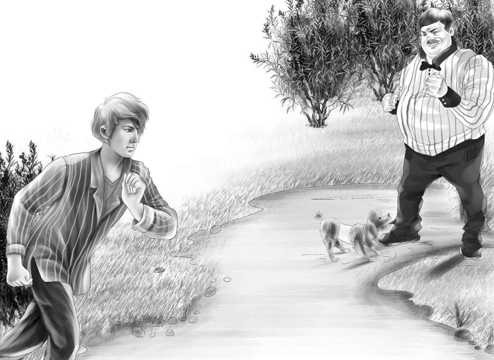

The Party
卡特先生之前说的“用不了多久就能破案”，实际上时间比他预想的要长得多。从那以后，再没有人见过蓝帽人。尽管班尼和迈克已经万分留意了，也没有发现那人的踪影。甚至这段时间以来，镇上压根儿就没有陌生人出现过。
馅饼店的生意很红火，伍德太太和女孩们每天都会做60张馅饼，它们很快就能被男孩们卖个精光。
“咱们已经赚回本了，全靠大家的好心，保险公司也帮了不少忙。”杰西说。
“是啊，亲爱的，”伍德太太说，“我们现在养活自己完全没问题了。”
“对！”维莉说，“做了这么多馅饼，我们的速度只会越来越快！”
“开馅饼店真是个明智的决定！”亨利说，“人们喜欢吃，我也超爱把馅饼卖出去的感觉。”
伍德太太说：“等你们回去上学以后，我就雇两个女孩子来帮忙。我认识两个很不错的女孩儿。”
“改天我们办个派对吧，”杰西说，“感谢大家的捧场和支持。”
“馅饼派对？”班尼问道，“会发给每人一张馅饼吗？”
伍德太太忍不住笑了起来，“整张饼可不行！一人一块就足够了，再配点儿咖啡。”
“还有牛奶。”班尼说。
“对的，还有牛奶。”伍德太太点点头。
“咱们的派对就定在星期六晚上吧，那样矿上的工人们就能来了。”维莉说。
“那就这么定啦！”班尼赶紧喊道。
“我们去问问卡特先生和加德纳先生有没有空。”亨利说。
“咱们可以白天做馅饼，”杰西说，“晚上开派对。”
所有人都觉得这个主意不错。当他们告诉加德纳先生时，他笑着说：“只管准备吧，我来帮你们。只可惜你们四个孩子秋天开学回家以后，我们这里就要变冷清了。”
星期六到了，伍德太太、杰西和维莉穿上白色的衣裙，戴上了自制的白色帽子。
她们也给男孩们做了白色的帽子和大围裙。男孩们用印模在大围裙上印下了“迈克妈妈的小店”七个大字。为了这次派对，大家还准备了不少牛奶和热咖啡。
客人们陆陆续续地来了。两只乖狗狗在屋子里尽情地撒着欢儿。它们喜欢这里的每一个人。
卡特先生准备了足够多的椅子给客人坐，也准备了电影给他们观赏。
卡特先生介绍道：“这是南太平洋的美丽风光，相信大家会喜欢上那里的香蕉树和猴子的。”
灯光暗了下来，电影开始播放了。客人们饶有兴致地观看着，不时被调皮的小猴子逗得拍手哈哈大笑。望望坐在杰西和班尼之间的椅子上，后面是迈克和花花，卡特先生则坐在后排的边儿上，紧挨着门口。窗户开着，门也是敞着的。班尼悄悄对迈克说：“要是有人想炸铀矿，现在正是下手的好机会！”
“没事儿，夜班守卫看着呢！”迈克低声说。
迈克伸手搂过花花的脖子，除了他以外，其他人都在注视着大荧幕。连他自己都不知道为什么要向门口张望，但他就是情不自禁，花花也是如此。突然，一个人影慢慢从门口晃过，他感到花花脖子上的毛猛地一炸，紧接着，花花冲着门口大声吼叫起来。
卡特先生听到吼叫声，一跃而起，夺门而追。迈克和花花则紧紧跟在后面。
他们看到一个人影跑进了沉沉的夜幕中，不过，花花的速度远比他快得多，它很快就咬住了那人的腿，大声号叫并拽着他，直到卡特先生追了上来，制服了坏人。迈克从来没想到卡特先生的双手居然那么有力。
夜班守卫也迅速赶到，带走了犯人。
“就是那个蓝帽人！”迈克大声喊着。
“没错，迈克，就是他，”卡特先生点点头，“花花认识他。”
“花花这次比在赛跑中跑得快多啦！”迈克说。
“我想是这样的！”卡特先生说，“好了，迈克，现在咱们静悄悄地回去，关于刚才的事情，一个字儿也别提。”
“能告诉班尼吗？”迈克说。
“当然可以，不过你得悄悄告诉他，要是让其他人知道了，派对就搞砸了。”
